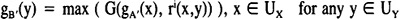
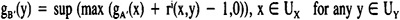

by Abraham Kandel
CRC Press, CRC Press LLC
ISBN: 084934297x Pub Date: 11/01/91
|
|
Fuzzy Expert Systems
by Abraham Kandel CRC Press, CRC Press LLC ISBN: 084934297x Pub Date: 11/01/91 |
| Previous | Table of Contents | Next |
Obviously, if A′ is too different from A, the given rule cannot provide any interesting result, and the conclusion “Y is B′”, which is deduced, is weighted with a coefficient of uncertainty. This coefficient equals 1 when the doubt is absolute and the obtained result of the inference cannot be used any more to match the premise of any other rule, even in a generalized modus ponens process.
A combination law is necessary to determine gB′ from r and gB′. Once more, several possibilities exist, determined in a general way for a given operation G defined and ranging on [0,1] as follows:

It is classical to consider a t-norm for G, because of its satisfying properties.6 The most commonly used is the minimum. Associated with the fuzzy implication of Lukasiewicz r8, it was proposed to define a generalized modus ponens process,15 but it must be noted that this expression may give a result gB′(y) different from fB(y) in particular cases, even if the observation is exactly described as in the antecedent of the rule. This is the case, for instance, if UX is not continuous and there exists x in UX so that fA(x) > fB(y) and fA(x) ≠ 1.
A property (P) which seems reasonable to require from the combination law is the preservation of the conclusion of the rule when the observation coincides with its premise. It can be proved2 that for G the choice of the t-norm F associated with the definition of the fuzzy implication (rN or rF, for instance, and consequently ri, for 5 ≤ i ≤ 8) ensures that requirement (P) is satisfied. Obviously, the choice of G is not unique and several combination operators may satisfy (P) for a given fuzzy implication ri. Similarly, it is possible to exhibit various implications compatible with any combination law associated with an operation G.
It can be stated3 that the combination law involving the t-norm G defined by G(a,b) = max (a + b - 1,0) for a and b in [0,1], satisfies (P) for any previously-mentioned fuzzy implication ri for every i = 1, 2, 3, 5, 6, 7, 8:

The two other best known t-norms defined by G(a,b) = min (a,b) and G(a,b) = a,b, respectively, for a and b in [0,1] are also satisfying with regard to (P), with i = 3, 6 and i = 3, 6, 7, respectively.
Reasonable arguments are necessary to choose a combination law, according to the characterization of the conclusion when the observation (F1 or F2, for example) is not ambiguous or less precise than the premise of the rule.
The conclusion “Y is B′ “ depends on the compatibility of the premise “X is A” and the observation “X is A′ “. The lowest value of the membership function gB′ should be almost equal to 1 if the uncertainty is important, which means that A′ is very different from A. On the contrary, gB′ must be almost identical with fB if A′ and A are very similar.
The following properties hold with the examples of t-norms G satisfying requirement (P) indicated.
This means that gA′(x) ≤ fA(x) ∀ x ∈ UX. Then B′ is generally also more specific than B: gB′(y) ≤ fB(y), ∀ y ∈ UY. Further, if we choose i = 1, 2, 3, 5, 6, 7, 8, or i = N or F and their associated t-norm for G, then we get B′ identical with B.
This means that gA′(x) ≥ fA(x) ∀ x ∈ U1. Then B′ is also less specific than B: gB′(y) ≥ fB(y), ∀ y ∈ UY if i = 1, 2, 5, 6, 7, 8, F, and i = 3 gives B itself as a conclusion.
Its membership function gA is 0 in every point of the universe UX different from a given one, e.g., x′1, where its value is 1 (example F1). Then any t-norm G gives a conclusion defined by g2(y) = ri(x′1,y).
If the premise of the rule itself is crisp with fA(x1) = 1 (example R2), then two probabilities may occur:
The choice of i = 3 entails that no element of UY can be taken into account in a further utilization of the conclusion of the rule, since fB(y) = 0, ∀ y ∈ UY.
Two points of view are then possible. Either we consider that the incompatibility of the observation and the rule entails a 0 probability associated with any point of UY, no inferred fact being available, even with a certain indetermination, or we express that this misfit of the observation and the premise of the rule entails a complete uncertainty on the conclusion and every point of UY remains probable. It is clear that the choice of an implication and a combination law depends on the point of view which is preferred.
| Previous | Table of Contents | Next |
){kind=link}
){kind=link}